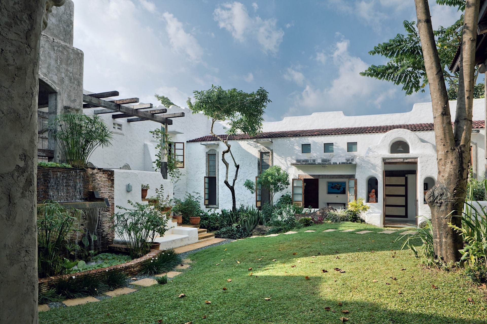

Antipolo City is a vibrant and picturesque city located in the province of Rizal, Philippines. Known as the "Pilgrimage Capital of the Philippines," Antipolo is a popular destination for both religious devotees and tourists seeking scenic views and a tranquil atmosphere.
One of the city's main attractions is the Antipolo Cathedral, officially named the National Shrine of Our Lady of Peace and Good Voyage. Pilgrims from all over the country visit this church, especially during the annual Hinulugang Taktak Pilgrimage and Festival, which takes place every May 30th.
Aside from its religious significance, Antipolo City is renowned for its breathtaking views of the Metro Manila skyline and the surrounding landscapes. Several spots, like the Pinto Art Museum and Cloud 9, offer visitors a chance to take in these panoramic views while appreciating art and nature.
The city is also known for its suman, a traditional Filipino rice cake, which comes in different flavors and is often enjoyed by locals and tourists alike. Additionally, Antipolo's local delicacies and handicrafts make for unique souvenirs for visitors.
Over the years, Antipolo has undergone rapid development, with new residential areas, commercial establishments, and tourist facilities springing up. Despite these changes, it has managed to retain its charm and cultural heritage, making it a well-loved destination for those seeking a blend of religious experiences, natural beauty, and a taste of Filipino culture.


Here's a list of the best Antipolo accommodations that you should consider if you're looking for where to stay in Antipolo: